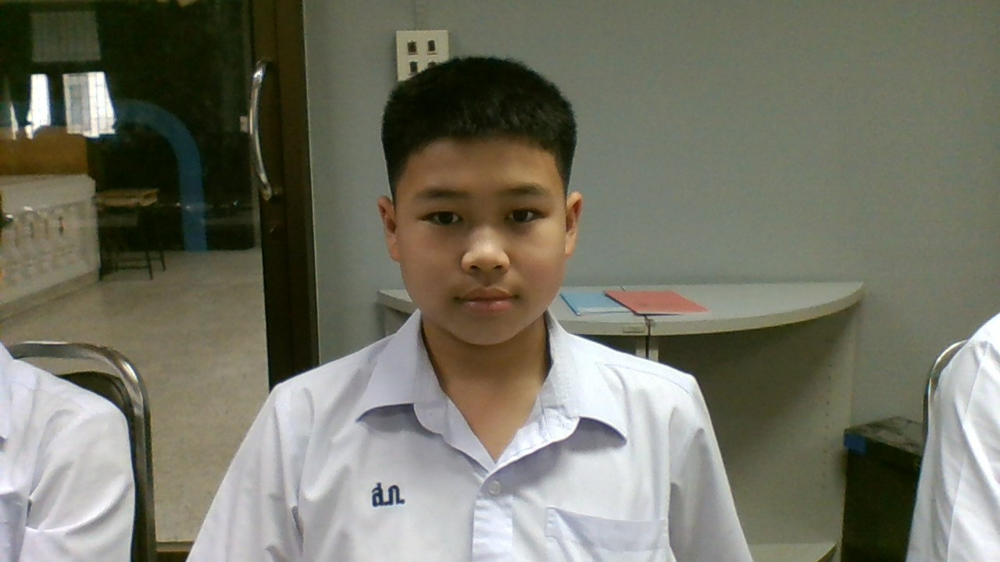

ประวัติส่วนตัวของฉัน
ชื่อ-นามสกุล: ด.ช. นิธิกฤษฎิ์ ปุณณ์วิทยโภคิน
ชื่อเล่น: กัปตัน
อายุ: 13 ปี
วันเกิด:8 ธันวาคม 2554
ศึกษาอยู่: ชั้นมัธยมศึกษาปีที่ 212
ที่อยู่: บ้านเพื่อน 212/4 ถ.ตรีเพชร กทม.
วิชาที่ชอบ: พลศึกษา
งานอดิเรก: เล่นกีฬา
อาชืพในฝัน: นักเขียนโปรแกรม
เพลงโปรด